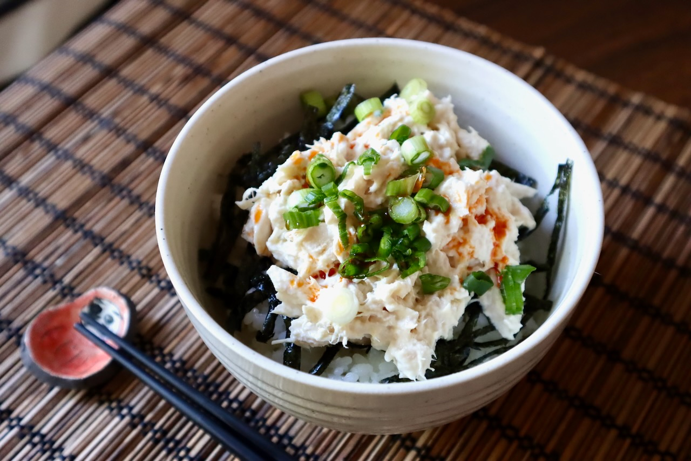

Tuna Mayo Rice Bowl

(Actual recipe not pictured)
Description
A simple bowl of tuna, mayo, and rice, with modest seasoning.
Although lacking in fiber, this bowl of protein and carbs is incredibly quick to put together making it an easy go-to.
I've eaten this probably more often than I should, but I'm not worried about my mercury levels.
Ingredients
- 1/2 cup (uncooked) white rice
- 1 can of chunk light tuna in water
- 3 Tbsp mayo
- 1 teaspoon roasted sesame oil
- Furikake seasoning
- 1 pack of nori sheets from Costco
Steps
- Cook 1 cup of white rice and scoop half into a bowl. Open the canned tuna and drain the water before placing atop rice.
- Add mayo and sesame oil to the bowl, and mix until done. Sprinkle a layer of furikake to finish.
- Serve warm. Use the nori sheets to scoop from the bowl in bite-sized amounts.
Home